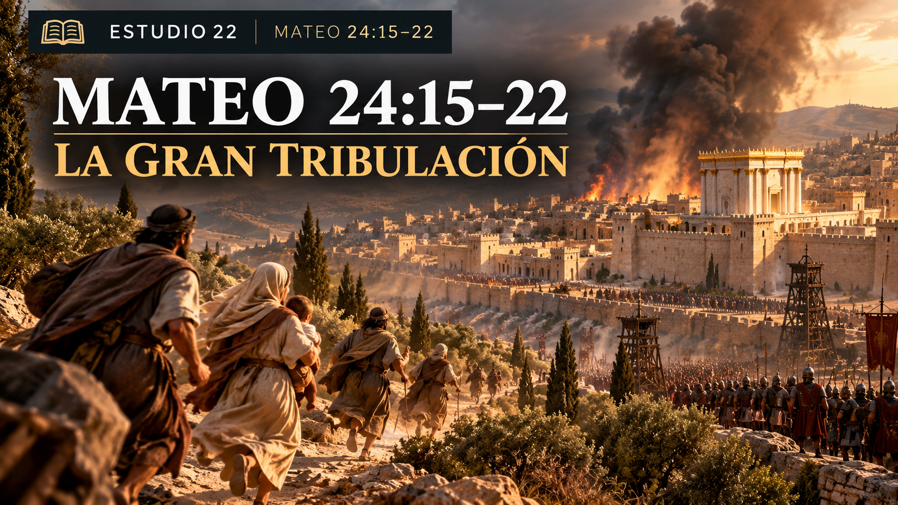
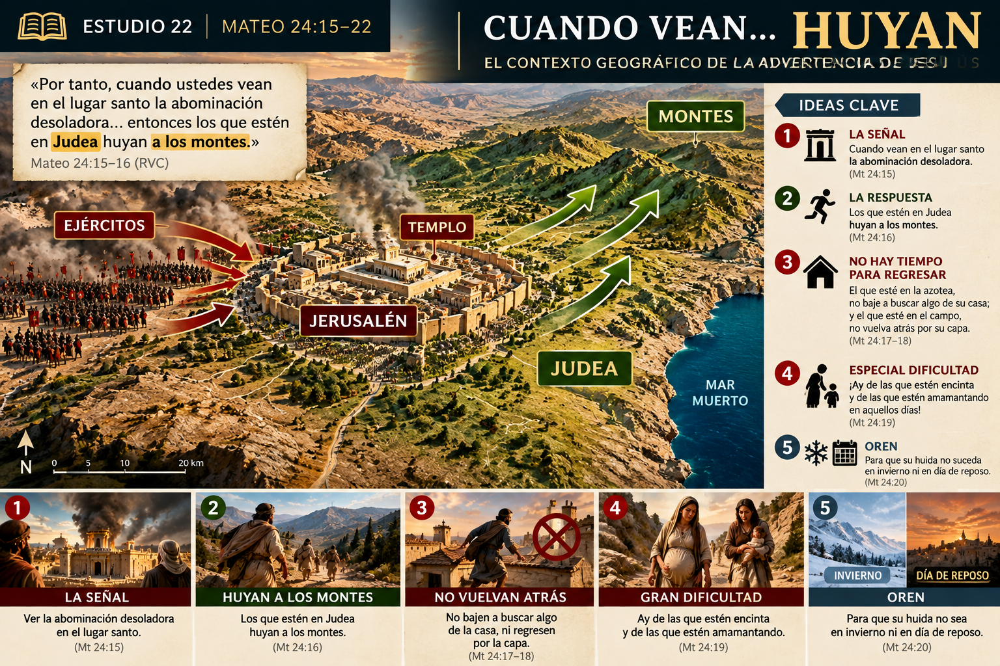
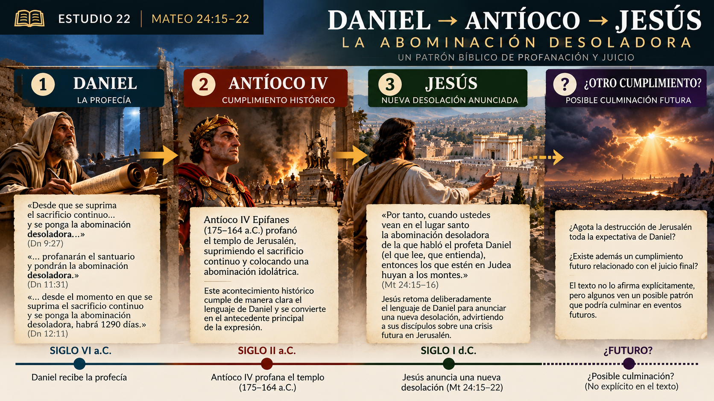
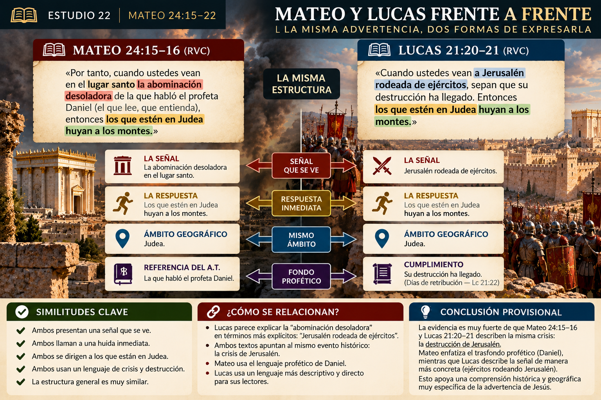
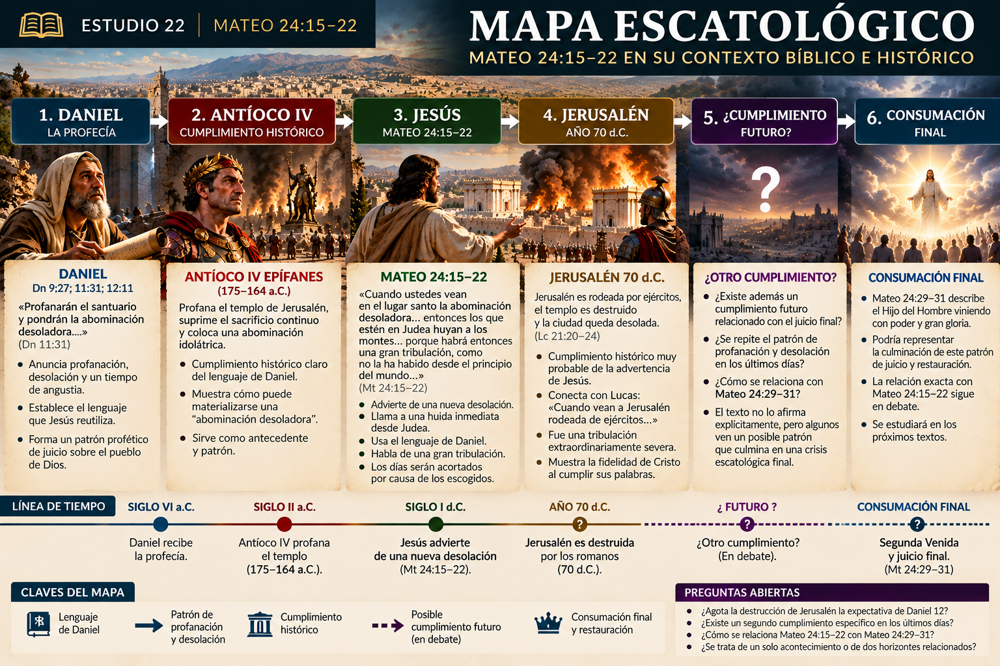

📕 Mateo 24:15–16
«Cuando ustedes vean... la abominación desoladora... entonces los que estén en Judea huyan a los montes.»

Estudio 22
¿Jesús está describiendo la destrucción de Jerusalén, una tribulación futura o un patrón que alcanza más de un horizonte?
Cuando Jesús habla de una “gran tribulación”, ¿está describiendo la destrucción de Jerusalén en el año 70 d.C., un período de sufrimiento inmediatamente anterior a su Segunda Venida, o existe alguna relación entre ambos acontecimientos?
Este pasaje es uno de los textos más importantes —y más discutidos— de la escatología cristiana. Por eso conviene resistir la tentación de comenzar con un sistema ya armado.
texto → contexto → lenguaje → antecedentes bíblicos → paralelos → interpretaciones → conclusión provisional.
«Por tanto, cuando ustedes vean en el lugar santo la abominación desoladora de la que habló el profeta Daniel (el que lee, que entienda), entonces los que estén en Judea huyan a los montes. El que esté en la azotea, no baje para llevarse algo de su casa; y el que esté en el campo, no vuelva atrás para tomar su capa. Pero ¡ay de las que estén encinta y de las que estén amamantando en aquellos días! Oren para que su huida no suceda en invierno ni en día de reposo, porque habrá entonces una gran tribulación, como no la ha habido desde el principio del mundo hasta ahora, ni la habrá jamás. Y si aquellos días no fueran acortados, nadie sería salvo; pero por causa de los escogidos, aquellos días serán acortados.»
Mateo 24:15–22
Jesús no presenta aquí una descripción abstracta del “fin del mundo”.
Da instrucciones extremadamente concretas:
Eso debe influir mucho en nuestra interpretación.
Las instrucciones de Jesús describen una situación concreta que exige una reacción física inmediata.
El discurso comenzó con una declaración sorprendente de Jesús acerca del templo:
«No quedará aquí piedra sobre piedra que no sea derribada.»
Mateo 24:2
Los discípulos preguntaron después:
«¿Cuándo sucederá esto, y cuál será la señal de tu venida y del fin del mundo?»
Mateo 24:3
Como vimos en los estudios anteriores, existe una dificultad interpretativa importante: determinar hasta qué punto Jesús responde sobre la destrucción del templo, sobre su venida, o sobre acontecimientos relacionados entre sí.
Esa cuestión todavía no debe cerrarse.
Pero Mateo 24:15 introduce algo diferente de los acontecimientos generales de Mateo 24:4–14.
«Cuando ustedes vean…»
Mateo 24:15
Aquí aparece una señal observable que provoca una respuesta inmediata:
Este detalle geográfico es fundamental.
Jesús no dice:
“Los habitantes del mundo huyan”.
Dice específicamente:
«Los que estén en Judea huyan a los montes.»
Mateo 24:16
Judea era una región concreta alrededor de Jerusalén.

Además, las instrucciones tienen sentido dentro de un contexto de emergencia militar:
La persona que está en la azotea no debe perder tiempo recogiendo pertenencias.
La que está trabajando en el campo tampoco debe regresar.
La urgencia domina todo el pasaje.
Mateo 24:15–22 tiene una referencia histórica y geográfica muy concreta.
Que esa referencia sea exclusivamente la guerra judía del siglo I.
Que Jesús esté describiendo solamente una tribulación mundial futura sin relación significativa con Judea del siglo I.
Aquí llegamos al centro del pasaje.
«La abominación desoladora de la que habló el profeta Daniel.»
Mateo 24:15
Mateo dirige explícitamente nuestra atención hacia Daniel.
τὸ βδέλυγμα τῆς ἐρημώσεως
tò bdélygma tês erēmṓseōs
En términos sencillos: una cosa detestable relacionada con la desolación.
Pero Jesús no inventa esta expresión.
📖 Viene de Daniel.
La expresión aparece especialmente alrededor de:
Daniel 11:31 habla de fuerzas que profanan el santuario y colocan la “abominación desoladora”.
Como vimos al estudiar Daniel, existe una conexión histórica particularmente fuerte con Antíoco IV Epífanes.
En el siglo II a.C., Antíoco profanó el templo de Jerusalén y suprimió elementos fundamentales del culto judío.
Ese conjunto forma el trasfondo natural de las palabras de Jesús.
Jesús vive después de Antíoco IV.
Y, sin embargo, habla de la abominación como algo que sus discípulos todavía deberán reconocer:
«Cuando ustedes vean…»
Mateo 24:15
Esto significa que el acontecimiento asociado con Antíoco funciona, como mínimo, como antecedente bíblico para comprender otra desolación.
Antíoco IV funciona como antecedente histórico y bíblico para comprender el lenguaje utilizado por Jesús.
No significa automáticamente que todos los detalles de Daniel tengan necesariamente un segundo cumplimiento idéntico.
Eso sería una inferencia adicional.
Podemos visualizar el desarrollo así:

profanación y desolación
profanación histórica del templo
advierte de una nueva desolación
Esto nos enseña algo importante sobre la profecía bíblica.
Un acontecimiento histórico anterior puede convertirse en el patrón lingüístico y teológico mediante el cual se describe otro acontecimiento posterior.
Pero debemos evitar afirmar más de lo que permite el texto.
Jesús reutiliza el lenguaje de Daniel.
Antíoco proporciona un patrón histórico relevante.
Que esto establezca automáticamente una cadena ilimitada de múltiples cumplimientos.
Mateo añade un detalle importante:
«Cuando ustedes vean en el lugar santo…»
Mateo 24:15
¿Qué significa exactamente?
El contexto de Daniel hace especialmente natural una relación con el santuario.
Pero tenemos una herramienta todavía más importante para interpretar Mateo:
👉 Lucas 21.
Comparemos los discursos.
«Cuando ustedes vean... la abominación desoladora... entonces los que estén en Judea huyan a los montes.»
«Cuando ustedes vean a Jerusalén rodeada de ejércitos, sepan que su destrucción ha llegado. Entonces los que estén en Judea huyan a los montes...»
La estructura es sorprendentemente cercana.
Abominación desoladora
↓Los de Judea huyen
Jerusalén rodeada de ejércitos
↓Los de Judea huyen

Esto constituye una de las evidencias más importantes del pasaje.
Probablemente existe una relación muy estrecha.
Lucas explica la señal mediante un lenguaje mucho más transparente para sus lectores:
«Jerusalén rodeada de ejércitos.»
Lucas 21:20
Y continúa:
«Porque estos son días de retribución, para que se cumplan todas las cosas que están escritas.»
Lucas 21:22
Después habla de:
Todo esto hace que la conexión de Mateo 24:15–22 con la destrucción histórica de Jerusalén sea extremadamente difícil de ignorar.
Lucas 21:20–24 describe la crisis de Jerusalén.
Mateo 24:15–22 está estrechamente relacionado con esa misma crisis.
Que Mateo y Lucas estén describiendo acontecimientos completamente distintos.
Esto merece atención.
En el mundo antiguo, cuando aparecía un ejército enemigo, normalmente las personas rurales buscaban protección dentro de una ciudad fortificada.
Jesús ordena prácticamente lo contrario:
🏃 Salgan.
No confíen en Jerusalén.
No confíen en sus murallas.
No intenten defender la ciudad.
🏃 Huyan.
Teológicamente, esto resulta significativo.
La ciudad santa no será el refugio.
El templo tampoco garantizará protección.
Esto encaja con lo que Jesús acababa de declarar:
«La casa de ustedes les queda desierta.»
Mateo 23:38
«No quedará aquí piedra sobre piedra.»
Mateo 24:2
Juicio sobre Jerusalén → destrucción del templo → los discípulos deben huir de Judea.
Existe una continuidad narrativa muy fuerte entre Mateo 23 y Mateo 24:15–22.
«¡Ay de las que estén encinta y de las que estén amamantando en aquellos días!»
Mateo 24:19
Jesús no está condenando el embarazo.
Está describiendo la terrible dificultad de una evacuación urgente.
Una mujer embarazada o una madre con un bebé tendría mayores dificultades para escapar rápidamente.
👶 bebés · 🤰 embarazos · 🏠 casas · 🧥 ropa · 🏔️ montañas · ❄️ invierno
El lenguaje es notablemente histórico y geográfico.
Los detalles de la advertencia describen una evacuación física concreta.
¿Por qué?
Porque las condiciones climáticas podían dificultar enormemente la huida.
Caminos complicados, frío, lluvias y desplazamientos difíciles harían una evacuación mucho más peligrosa.
Jesús presupone que sus discípulos pueden:
Esto será importante cuando evaluemos algunas interpretaciones.
Mateo añade:
«Ni en día de reposo.»
Mateo 24:20
Esta referencia tiene especial sentido dentro de un contexto judío.
Podrían existir dificultades prácticas, sociales o religiosas adicionales para desplazarse en sábado.
Sea cual sea la explicación exacta, nuevamente el contexto apunta hacia:
más que hacia una descripción genérica de una catástrofe mundial.
El ambiente histórico y cultural del pasaje es específicamente judeano.
«Porque habrá entonces una gran tribulación...»
Mateo 24:21
θλῖψις μεγάλη
thlípsis megálē
Literalmente: gran aflicción / gran tribulación.
La palabra θλῖψις (thlípsis) puede referirse a presión, aflicción, sufrimiento o tribulación.
La expresión no funciona automáticamente como un nombre técnico equivalente a:
“La Gran Tribulación = período escatológico de exactamente X años”.
Eso puede formar parte de determinados sistemas teológicos, pero Mateo 24:21 por sí mismo no proporciona esa duración.
Jesús anuncia una tribulación extraordinariamente severa.
Que Mateo 24:21 establezca una tribulación futura de exactamente siete años.
Una conexión con Daniel 9 para construir esa cronología requiere argumentos adicionales.
Aquí aparece la principal dificultad para identificar todo simplemente con el año 70 d.C.
«Una gran tribulación, como no la ha habido desde el principio del mundo hasta ahora, ni la habrá jamás.»
Mateo 24:21
A primera vista parece describir el peor acontecimiento de toda la historia humana.
Y sabemos que después del año 70 ocurrieron catástrofes con cantidades de víctimas muchísimo mayores.
¿Jesús habla literalmente en términos estadísticos?
¿O utiliza lenguaje profético de catástrofe extrema?
Para responder necesitamos volver al Antiguo Testamento.
Comparemos Daniel 12:1:
«Será un tiempo de angustia, como nunca antes lo hubo desde que existen las naciones...»
Daniel 12:1
La semejanza con Mateo es evidente.
Pero existen otros ejemplos bíblicos de lenguaje semejante.
En Éxodo 11:6, acerca del juicio sobre Egipto, encontramos una descripción de un clamor como nunca lo hubo ni lo volverá a haber.
También los profetas utilizan expresiones absolutas para describir juicios históricos extraordinarios.
Esto nos advierte contra interpretar automáticamente este tipo de expresiones como una comparación matemática entre todas las tragedias de la historia.
Es un recurso conocido del lenguaje bíblico de juicio.
Mateo utiliza lenguaje de severidad máxima.
Que la frase obligue a interpretar el acontecimiento como una catástrofe mundial futura.
Que pueda describir hiperbólicamente una catástrofe histórica excepcional, especialmente teniendo en cuenta los antecedentes proféticos y el contexto inmediato.
Aquí encontramos una conexión especialmente interesante.
Daniel 12:1 habla de un tiempo de angustia incomparable.
Mateo 24:21 habla de una gran tribulación incomparable.
Y Jesús ya había mencionado explícitamente a Daniel pocos versículos antes.
Por tanto, probablemente no estamos ante una coincidencia.
Jesús parece estar leyendo la crisis que anuncia mediante el lenguaje escatológico de Daniel.
Daniel 12 forma parte del trasfondo del lenguaje utilizado por Jesús.
¿Jesús considera que la destrucción de Jerusalén agota completamente la expectativa de Daniel 12?
El texto no permite resolver todavía toda esa cuestión.
Y Daniel 12 está relacionado además con la resurrección, lo cual impide simplificar demasiado la relación.
«Y si aquellos días no fueran acortados, nadie sería salvo; pero por causa de los escogidos, aquellos días serán acortados.»
Mateo 24:22
Aquí “salvo” puede generar confusión.
σῴζω
sōzō
Puede significar:
En este contexto de guerra, huida y destrucción, el sentido de supervivencia física es muy natural.
Es decir:
Si la crisis continuara indefinidamente, nadie sobreviviría.
Pero Dios limita esos días.
Este detalle es teológicamente precioso.
La tribulación no está fuera del control de Dios.
Los días son: “acortados”.
Y existe una razón:
❤️ “Por causa de los escogidos”.
El texto no presenta una historia fuera de control.
Aquí debemos ser prudentes porque dedicaremos un estudio posterior específicamente a lo ocurrido en el año 70.
Pero podemos establecer el marco básico.
Entre 66–73/74 d.C. tuvo lugar la Primera Guerra Judeo-Romana.
Jerusalén terminó sitiada por fuerzas romanas y en 70 d.C. la ciudad fue conquistada y el templo destruido.
El historiador judío Flavio Josefo ofrece una descripción extensa de la guerra y del sitio.
Josefo describe:
No necesitamos aceptar acríticamente cada cifra proporcionada por Josefo para reconocer que la catástrofe fue extraordinariamente grave.
Esto proporciona un contexto histórico muy natural para las palabras de Jesús.
Según esta lectura, Jesús está advirtiendo directamente sobre la destrucción de Jerusalén.
La “abominación desoladora” está relacionada con la invasión romana y la desolación de Jerusalén.
Esta interpretación posee un apoyo contextual muy fuerte dentro de Mateo 24:15–22.
Su principal dificultad aparece cuando el discurso continúa hacia Mateo 24:29–31.
¿Continúa Jesús describiendo el año 70 o cambia el horizonte hacia su venida final?
Todavía no debemos resolverlo.
Esta lectura entiende Mateo 24:15–22 principalmente como una crisis mundial inmediatamente anterior a la Segunda Venida.
Suele relacionarse con:
La conexión de Mateo 24 con Daniel y el lenguaje extraordinario de Mateo 24:21 pueden sugerir un horizonte escatológico mayor.
Debe explicar satisfactoriamente por qué Jesús habla tan específicamente de:
y especialmente por qué Lucas parece asociar la señal con:
«Jerusalén rodeada de ejércitos.»
Entender el pasaje como exclusivamente futuro y sin referencia sustancial al siglo I.
Una tercera posibilidad sostiene que Jesús habla realmente de la destrucción de Jerusalén, pero que ese juicio también funciona dentro de un patrón bíblico más amplio que puede anticipar el juicio final.
profanación histórica
nuevo juicio y desolación
❓ posible culminación del patrón
Esta propuesta tiene una ventaja:
permite tomar muy seriamente el contexto histórico sin negar que Mateo 24 puede avanzar posteriormente hacia la consumación.
Pero debemos ser cuidadosos.
Existen patrones bíblicos repetidos de profanación y juicio.
Mateo 24:15–22 no declara expresamente dos cumplimientos separados.
Que Jerusalén 70 funcione tipológicamente como anticipación del juicio final, aunque debe demostrarse desde el desarrollo posterior del discurso.
Si nos limitamos estrictamente a Mateo 24:15–22 y su paralelo en Lucas 21, la referencia inmediata a la crisis histórica de Judea y Jerusalén tiene el apoyo contextual más fuerte.
Especialmente por la combinación de:
🟢 Jesús anuncia una crisis concreta relacionada con Jerusalén.
🟢 Daniel proporciona el lenguaje teológico para comprender esa desolación.
🟢 Lucas conecta estrechamente la señal con Jerusalén rodeada por ejércitos.
🟢 La huida demuestra que Jesús espera una reacción práctica de sus discípulos.
🟡 La destrucción del año 70 encaja fuertemente como referente histórico.
🟠 Que el pasaje tenga además una segunda realización futura específica continúa siendo debatido.
🔴 Una tribulación mundial de exactamente siete años no puede extraerse solamente de Mateo 24:15–22.
Esto es fundamental.
Si termináramos el discurso en el versículo 22, la interpretación histórica sería relativamente sencilla.
Pero Jesús continúa.
En Mateo 24:23–28 hablará de:
⚠️ falsos cristos.
Y después, en Mateo 24:29:
«Inmediatamente después de la tribulación de aquellos días…»
Mateo 24:29
Aparecerán:
Ahí aparecerá una de las cuestiones más difíciles de todo Mateo 24.
❓ ¿Describe Jesús todavía el juicio sobre Jerusalén?
❓ ¿Utiliza lenguaje profético del Antiguo Testamento?
❓ ¿Habla ya de la Segunda Venida?
❓ ¿Se superponen ambos horizontes?
No debemos decidirlo todavía.
Lo estudiaremos desde los textos correspondientes.
Es fácil convertir Mateo 24 en un rompecabezas de cronologías.
Pero Jesús está haciendo algo mucho más pastoral.
Está preparando a sus discípulos.
Jesús no entrega esta enseñanza para alimentar curiosidad morbosa sobre catástrofes.
La entrega para que sus discípulos permanezcan fieles.
🏛️ El templo puede caer.
🏙️ Jerusalén puede caer.
✝️ Pero la palabra de Cristo permanece.
Eso prepara el camino para una de las afirmaciones centrales del discurso:
«El cielo y la tierra pasarán, pero mis palabras no pasarán.»
Mateo 24:35
Podemos añadir nuevas piezas sin rellenar todavía los huecos.

abominación → profanación → desolación
antecedente histórico claro
nueva desolación anunciada
Jerusalén rodeada por ejércitos
destrucción de Jerusalén y del templo
No conectamos todavía esos últimos puntos.
| Afirmación | Evaluación |
|---|---|
| Jesús utiliza deliberadamente el lenguaje de Daniel. | 🟢 Muy fuerte |
| La abominación está relacionada con profanación/desolación. | 🟢 Muy fuerte |
| Antíoco IV constituye un antecedente histórico fundamental. | 🟢 Muy fuerte |
| Mateo 24:15–22 tiene un marco específicamente judeano. | 🟢 Muy fuerte |
| Lucas relaciona estrechamente la señal con Jerusalén rodeada de ejércitos. | 🟢 Muy fuerte |
| Jesús está anunciando una crisis histórica sobre Jerusalén. | 🟢 Muy fuerte |
| El año 70 encaja fuertemente con esa advertencia. | 🟡 Probable / muy bien sustentado |
| “Gran tribulación” es automáticamente un nombre técnico para siete años. | 🔴 No demostrado por este texto |
| El pasaje tiene además un segundo cumplimiento futuro. | 🟠 Disputado |
| Jerusalén 70 funciona como patrón del juicio final. | 🟡 Plausible, pero requiere más evidencia |
| Mateo 24:29–31 continúa describiendo exactamente el mismo acontecimiento. | ❓ Pendiente |
La lectura contextual de Mateo 24:15–22 nos conduce primero hacia Judea, Jerusalén y la destrucción anunciada por Jesús, no directamente hacia una cronología moderna del fin del mundo.
La conexión con Daniel es real y fundamental.
Pero Daniel debe ayudarnos a comprender el lenguaje de Jesús, no convertirse en una excusa para introducir elementos que Mateo no menciona.
La evidencia acumulada hasta aquí apunta con bastante fuerza hacia:
Sin embargo, todavía queda abierta una pregunta enorme:
Mateo 24:23–31 será decisivo para responderla.
Por eso nuestro Mapa Escatológico queda deliberadamente abierto.